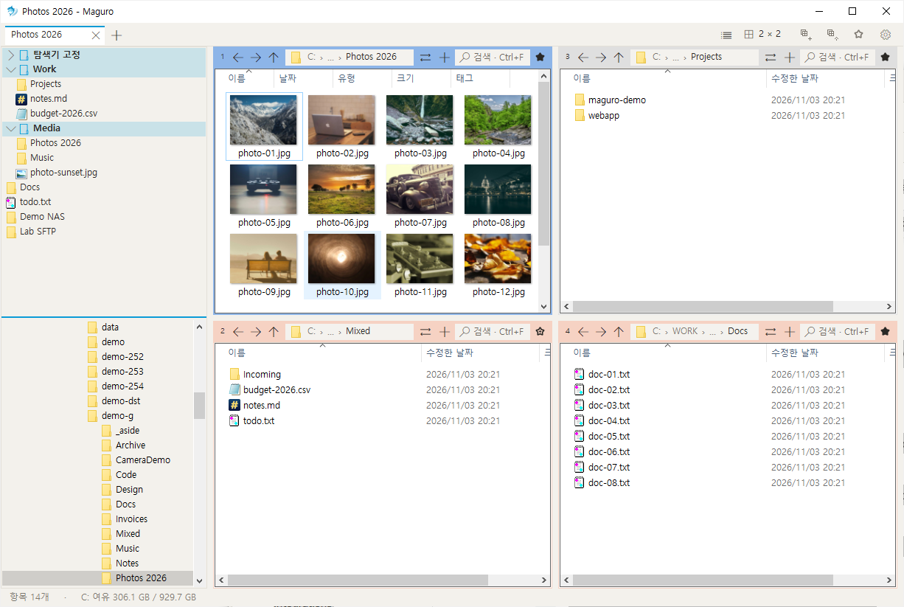
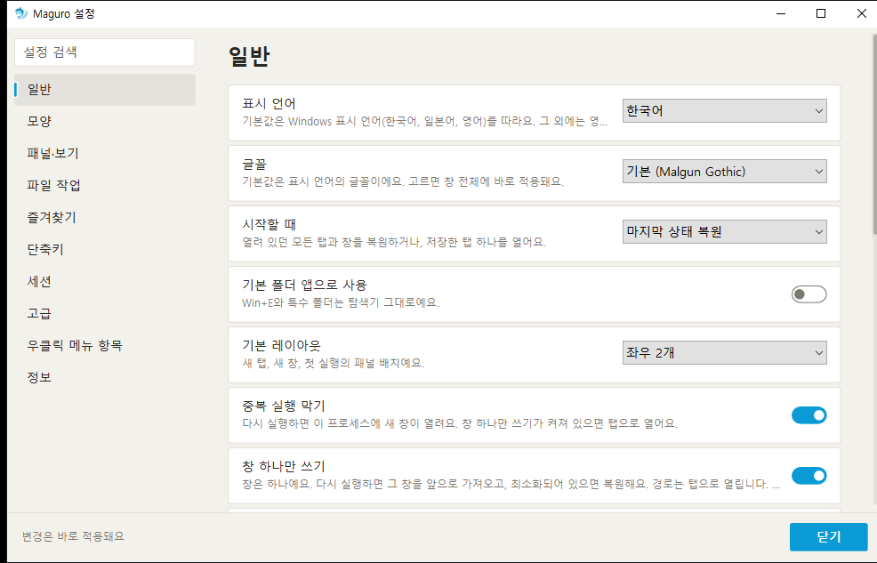
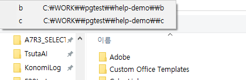

Maguro 도움말
Windows용 빠른 다중 패널 파일 관리자
개요
Maguro는 Windows용 다중 패널 파일 관리자입니다.
패널 하나가 폴더 하나입니다. 나란히 또는 격자로 두고 다른 프로그램 없이 복사·이동·비교합니다.
시작 메뉴나 명령줄에서 실행합니다. maguro.exe 뒤에 폴더 경로를 쓰거나 .maguro 세션 파일을 엽니다.
F1은 브라우저에서 이 도움말을 엽니다. Ctrl+/는 앱 안의 짧은 바로 가기 목록입니다. Ctrl+,는 설정입니다.


주소 칸 · 도구 모음
키 목록은 바로 가기.
주소 칸은 현재 폴더입니다. 경로의 이름을 누르면 이동합니다. › 를 누르면 안의 폴더를 봅니다.
현재 폴더·빈 곳을 누르거나 바로 가기의 주소 칸으로 경로를 입력합니다.
도구 모음에는 레이아웃, 저장, 세션 열기, 즐겨찾기가 있습니다. 드라이브 글자는 탭 줄에 둘 수 있습니다.
상태 표시줄은 선택 개수와 남은 용량을 보여 줍니다.
⇄ 는 선택한 폴더(없으면 현재 폴더)를 다른 패널에서 열고 열·보기를 유지합니다. 또는 선택한 파일을 다른 패널 폴더로 복사·이동합니다(최대 10,000). 패널이 하나면 좌우로 나눕니다. 선택이 없으면 현재 폴더를 복제합니다.

레이아웃 · 패널
키 목록은 바로 가기.
패널은 폴더 하나입니다.
레이아웃을 클릭하면 균등 격자입니다. 누른 채 끌면 열마다 칸 수를 정합니다. 방향키와 Enter도 됩니다.
분할선을 더블클릭하면 균등 분할, 끌면 크기 변경입니다.
한도: 열 4, 한 열의 행 4, 패널 16.
Ctrl+Shift+M 또는 패널 머리글 더블클릭으로 그 패널을 최대화하고, 다시 하면 복원합니다.



패널 이동 · 복제
번호나 머리글을 끌어 패널을 옮깁니다.
가장자리에 놓으면 대상 패널이 분할됩니다. 중앙에 놓으면 서로 바꿉니다.
Ctrl을 누른 채 끌면 현재 패널 탭을 복사합니다. 가장자리는 이 패널을 남기고 분할하고, 중앙은 그 칸에 패널 탭을 추가합니다.
빨간 미리보기는 한도를 넘는다는 뜻입니다. Ctrl을 떼면 복제가 아니라 이동합니다.


창 탭 · 세션
키 목록은 바로 가기.
창 탭은 레이아웃 전체(패널·폴더·보기·색 라벨)를 담습니다.
저장은 이 탭을 씁니다. 저장 버튼의 초록 점은 레이아웃이 아직 저장되지 않았다는 뜻입니다(일반 파일 복사와 무관).
세션 열기는 저장한 탭을 현재 탭 옆에 엽니다. 여러 개를 열면 각각 탭이 됩니다.
Ctrl+N은 새 창입니다. 단일 창 모드면 이 창을 앞으로 가져오고 경로는 탭으로 엽니다. 단일 인스턴스는 다음 실행을 이 프로세스에 붙입니다.
새/닫기/다음/이전 탭, 닫은 탭 다시 열기, 탭 복제는 바로 가기를 보세요.

패널 탭
키 목록은 바로 가기.
패널 탭은 한 패널 안의 추가 폴더입니다. 창 탭과 다릅니다.
폴더가 하나면 줄이 숨겨집니다. ⇄ 옆 버튼으로 패널 탭을 추가합니다.
가운데 클릭이나 작은 닫기 표시로 닫습니다. 패널 탭 바로 가기는 포커스가 패널에 있을 때만 동작합니다.

패널 색
패널 머리글을 오른쪽 클릭해 색 라벨을 정합니다.
세션에 저장되며 창 탭 색과 별개입니다.

즐겨찾기 · 폴더 트리
키 목록은 바로 가기.
즐겨찾기와 폴더 트리는 왼쪽 패널을 나눕니다. 사이 분할선을 끕니다. 위아래 순서는 설정에서 정합니다.
즐겨찾기를 누르면 활성 패널에서 엽니다. 그룹을 누르면 펼치거나 접습니다. 검색은 부모 그룹을 남겨 위치가 보이게 합니다.
폴더와 파일 모두 즐겨찾기에 둘 수 있습니다. 없는 폴더는 빈 경로를 열지 않고 안내합니다.
도구 모음 즐겨찾기는 큰 목록을 엽니다(검색·이름 변경·삭제·활성 패널에서 열기). 탐색기 핀도 나올 수 있습니다.
폴더 트리에서 Enter나 더블클릭으로 패널에 엽니다. Ctrl 클릭·가운데 클릭은 패널 탭으로 엽니다.
왼쪽 패널 표시는 바로 가기를 보세요.

검색
Ctrl+F로 이 폴더를 검색합니다.
하위 폴더까지 깊게 찾으려면 Everything을 설치하고 실행해 둡니다. 설정 → 일반에서 상태를 보고 설치·시작할 수 있습니다.
Everything이 실행 중일 때만 Maguro가 질의합니다.

미리보기 · 퀵룩
키 목록은 바로 가기.
F3이 퀵룩입니다. Space 미리보기가 켜져 있으면 Space도 같습니다(입력 직후·IME 조합 중 Space는 이름에 남음).
퀵룩에서 Enter는 기본 앱으로 열고 미리보기를 닫습니다. Shift+Enter나 오른쪽 클릭은 다른 앱으로 열기입니다.
Alt+P는 미리보기 패널입니다. 옵션이 켜져 있으면 휠로 이전·다음 파일로 이동합니다.


파일 작업
키 목록은 바로 가기.
복사·잘라내기·붙여넣기·이름 변경·삭제는 탐색기와 같습니다(바로 가기 참고).
Del은 Windows 기본(보통 휴지통)을 따릅니다. Shift+Del은 완전 삭제입니다. 설정에서 Del 확인과 기본 삭제를 정할 수 있습니다.
패널 사이 끌기로 복사·이동합니다. 같은 드라이브는 이동, 다른 드라이브는 복사(설정에서 기본 끌기를 바꿀 수 있음). 폴더 행에 놓으면 그 안으로 들어갑니다.
빠른 복사(설정 → 파일 작업)는 네트워크 붙여넣기·끌기에 robocopy와 Maguro 진행률·취소를 씁니다. 대상의 여분 파일은 지우지 않습니다. 끄면 Windows 복사 창입니다. 로컬만의 복사는 Windows를 씁니다.
클립보드에 그림이 있으면 Ctrl+V가 현재 폴더에 PNG로 저장합니다.
새 폴더·새 텍스트 파일은 바로 가기에 있습니다. 새 파일 이름은 설정에서 옵니다.
Ctrl+Shift+O는 같은 선택 이름을 다른 패널들에 모읍니다.
Ctrl+Alt+C는 활성 패널 폴더와 다음 패널을 WinMerge로 비교합니다. 톱니·목록에서 파일 두 개, 또는 다른 패널의 같은 이름 파일과도 비교할 수 있습니다. WinMerge 경로는 설정 → 일반입니다.

일괄 이름 변경
키 목록은 바로 가기.
Ctrl+Shift+R로 선택 항목을 일괄 이름 변경합니다.
접두·접미·바꾸기를 넣고 적용 전에 미리 봅니다.

파일 바구니
키 목록은 바로 가기.
Ctrl+Shift+B로 항상 위 작은 창인 파일 바구니를 엽니다.
끌어 놓거나 Ctrl+Alt+B로 활성 패널 선택을 넣습니다. 원래 경로를 유지합니다.
활성 패널로 복사·이동은 Windows 진행 창을 씁니다. 밖으로 끌면 복사, Shift 끌면 이동입니다. 제거·모두 지우기는 목록만 바꿉니다.

폴더 감시
키 목록은 바로 가기.
Ctrl+Shift+W로 폴더 감시를 엽니다.
폴더 변경을 지켜보다가 새 항목·갱신이 있으면 바로 이동합니다.

클립보드 경로
키 목록은 바로 가기.
Win+Shift+V는 클립보드의 경로를 새 탭으로 엽니다.
설정 → 일반에서 이 바로 가기를 켜거나 끌 수 있습니다.

워크스페이스
키 목록은 바로 가기.
워크스페이스는 탭·패널·폴더 배치를 최대 9칸에 저장합니다.
Ctrl+Alt+1…9로 불러오고, Ctrl+Alt+Shift+1…9로 저장합니다.
톱니 → 워크스페이스에서 저장·불러오기·이름·비우기를 합니다. 빈 칸은 짧은 안내를 냅니다.
불러오면 현재 탭을 바꿉니다. 불러오기 전 확인은 해당 옵션이 켜져 있을 때만입니다.

서버 연결
SMB, WebDAV, SFTP, FTP에 연결합니다. 연결된 서버는 열고·복사·미리보기할 수 있는 폴더로 보입니다.
연결 대화상자에서 종류·주소·포트·사용자·비밀번호를 넣습니다. 비밀번호는 Windows 자격 증명에만 두고 설정 파일에는 쓰지 않습니다.
SMB는 Windows 공유입니다. WebDAV는 HTTPS가 필요할 수 있습니다. FTP는 입력한 호스트·포트입니다. SFTP는 rclone과 WinFsp가 필요하며 Maguro가 설치를 안내할 수 있습니다.
끝나면 끊습니다. 끊긴 공유는 네트워크 폴더 크기 옵션이 켜져 있지 않으면 크기를 걷지 않습니다. 네트워크 폴더가 안 열리면 F5로 다시 시도합니다.

Office 파일
다른 앱이 연 Excel 등 Office 파일은 읽기 전용으로 열릴 수 있습니다.
잠긴 통합 문서가 탐색을 막지 않도록 목록을 정리합니다.

테마 · 모양
설정 → 모양에서 테마, 강조색, 도구 모음, 드라이브 버튼, 상태 표시줄을 정합니다.
밝게·어둡게는 강조색을 따로 기억합니다. Windows 따르기는 시스템과 함께 바뀝니다.
테마를 바꾼 뒤 폴더 목록 색은 다음 실행에 적용되고, 나머지 창은 바로 바뀝니다.
이 도움말 쪽 사이드바에도 밝게/어둡게/자동이 있습니다.

설정
Ctrl+,로 설정을 엽니다. 검색은 제목·설명이 맞는 카드로 이동합니다.
일반 — 표시 언어, 글꼴, 시작할 때, 기본 폴더 앱, 기본 레이아웃, 단일 인스턴스, 단일 창, 열기/저장 대화상자의 폴더, 클립보드 경로 바로 가기, 빈곳 더블클릭으로 상위, Everything, WinMerge.
모양 — 테마, 강조색, 도구 모음, 드라이브 버튼, 상태 표시줄.
패널과 보기 — 새 패널 기본 보기, 폴더마다 보기 기억, 모든 폴더 기본 보기, 새 패널 시작 폴더, 숨김 파일, 확장자, 폴더 크기(네트워크 포함), 왼쪽 패널·순서, 활성 패널 테두리, 미리보기 패널, Space 미리보기, 휠로 이전·다음.
파일 작업 — Windows 복사 창, 네트워크 빠른 복사, 삭제 확인, 기본 삭제, 새 파일 이름, 기본 끌어서 놓기.
즐겨찾기 — 왼쪽 패널 표시와 즐겨찾기/트리 위아래.
바로 가기 — 행을 더블클릭하고 새 키를 누릅니다. Esc는 취소, 재설정은 기본값. 충돌하면 알립니다.
세션 — 세션 폴더, 종료 시 저장, 초록 점.
고급 — 시작 시 업데이트 확인, 설정 파일 위치, 모두 재설정. maguro.exe 옆 portable.txt는 설정을 AppData 대신 exe 옆에 둡니다. 재설정은 기본 설정만 돌리고 레이아웃·폴더·즐겨찾기는 남깁니다.
오른쪽 클릭 메뉴 — 타사 항목과 메뉴 형태.
정보 — 버전과 링크.


기타 창 동작
키 목록은 바로 가기.
Win+Shift+E는 Maguro를 앞으로 가져옵니다.
Ctrl+Alt+G는 옵션이 켜져 있을 때 파일 대화상자에서 폴더로 점프합니다.
F6 / Shift+F6은 포커스를 옮깁니다. Ctrl+H는 숨김 파일을 토글합니다.
패턴으로 선택·해제·반전은 바로 가기(Num+, Num−, Num*)에 있습니다.
전체 경로 복사와 폴더에서 보기도 바로 가기에 있습니다.
최근 파일은 Ctrl+Alt+R, 최근 폴더는 Alt+↓입니다.

바로 가기
Maguro의 모든 키가 아래에 있습니다. 같은 목록은 Ctrl+/로 앱에서도 엽니다.
설정 → 바로 가기에서 행을 더블클릭하고 새 키를 누릅니다. Esc는 취소, 재설정은 기본값입니다.
앱 안 목록은 설정을 다시 시작 없이 따릅니다.
| 키 | 동작 |
|---|---|
| 탭 | |
| Ctrl+T | 새 탭 |
| Ctrl+W | 탭 닫기 |
| Ctrl+Tab | 다음 탭 |
| Ctrl+Shift+Tab | 이전 탭 |
| Ctrl+Shift+T | 닫은 탭 다시 열기 |
| Ctrl+Alt+K | 탭 복제 |
| 패널 | |
| Ctrl+PageDown | 다음 패널 |
| Ctrl+PageUp | 이전 패널 |
| Ctrl+1…9 | 1–9번 패널로 이동 |
| 패널 탭 | |
| Ctrl+Alt+T | 새 패널 탭 |
| Ctrl+Alt+W | 패널 탭 닫기 |
| Ctrl+Alt+PageDown | 다음 패널 탭 |
| Ctrl+Alt+PageUp | 이전 패널 탭 |
| 이동 | |
| Alt+Shift+← | 왼쪽 패널 |
| Alt+Shift+→ | 오른쪽 패널 |
| Alt+Shift+↑ | 위 패널 |
| Alt+Shift+↓ | 아래 패널 |
| Ctrl+Alt+Shift+← | 왼쪽 패널과 자리 바꾸기 |
| Ctrl+Alt+Shift+→ | 오른쪽 패널과 자리 바꾸기 |
| Ctrl+Alt+Shift+↑ | 위 패널과 자리 바꾸기 |
| Ctrl+Alt+Shift+↓ | 아래 패널과 자리 바꾸기 |
| Alt+← | 뒤로 |
| Alt+→ | 앞으로 |
| Alt+↑ | 상위 폴더 |
| Alt+↓ | 최근 폴더 |
| Ctrl+L / Alt+D / F4 | 주소창 |
| 보기 | |
| Ctrl+F | 이 폴더 검색 |
| F3 | 빠른 미리보기 |
| Alt+P | 미리보기 창 |
| F6 | 다음 포커스 |
| Shift+F6 | 이전 포커스 |
| Ctrl+H | 숨김 파일 표시 |
| Ctrl+Shift+E | 왼쪽 패널 표시 |
| Ctrl+Shift+O | 탐색기 폴더 가져오기 |
| Ctrl+Alt+R | 최근 파일 |
| Ctrl+Shift+M | 패널 크게 보기 / 복원 |
| 파일 | |
| Ctrl+Shift+C | 전체 경로 복사 |
| Ctrl+Shift+R | 일괄 이름 바꾸기 |
| Num+ / Ctrl+Shift+A | 패턴으로 선택 |
| Num− | 패턴으로 선택 해제 |
| Num* | 선택 반전 |
| Ctrl+Alt+N | 새 텍스트 문서 |
| Ctrl+Shift+N | 새 폴더 |
| F7 | 이 패널에 새 폴더 |
| Ctrl+Alt+C | WinMerge로 폴더 비교 |
| Ctrl+Shift+B | 파일 바구니 |
| Ctrl+Alt+B | 선택을 바구니에 담기 |
| Ctrl+Enter | 폴더에서 표시 |
| 세션 | |
| Ctrl+S | 이 탭 저장 |
| 작업 공간 | |
| Ctrl+Alt+1…9 | 작업 공간 불러오기 |
| Ctrl+Alt+Shift+1…9 | 작업 공간 저장 |
| 즐겨찾기 | |
| Ctrl+B | 즐겨찾기 |
| 도움말 | |
| Ctrl+, | 설정 |
| F1 | 단축키 도움말 |
| Ctrl+/ | 단축키 목록 |
| 창 | |
| Win+Shift+E | Maguro를 앞으로 |
| Ctrl+Alt+G | 파일 대화 상자의 폴더로 이동 |
| Win+Shift+V | 클립보드 경로 열기 |
| Ctrl+N | 새 창 |
| Ctrl+Shift+W | 폴더 감시 |
마우스: 레이아웃 클릭/끌기, 주소 칸 ›, 분할선 더블클릭, 패널 머리글 오른쪽 클릭으로 색, 패널 탭 가운데 클릭으로 닫기.
문제 해결
폴더가 안 열림 — 패널을 누르고 F5. F5는 창 어디서든 활성 패널을 다시 읽고 실패한 네트워크 폴더를 재시도합니다.
하위 검색이 비어 있음 — Everything을 설치·실행하고 설정 → 일반을 확인합니다.
네트워크 복사가 느리거나 Maguro 진행이 없음 — 네트워크 빠른 복사를 켭니다. 끄면 Windows 복사 창입니다. 로컬만의 복사에는 빠른 복사가 쓰지 않습니다.
WinMerge가 안 뜸 — 설정 → 일반에서 경로를 지정합니다. 폴더 비교는 실제 폴더여야 합니다.
SFTP 실패 — 안내에 따라 rclone·WinFsp를 설치하고 호스트·포트·사용자·비밀번호를 확인합니다. WebDAV는 HTTPS가 필요할 수 있습니다. SMB는 Windows 공유 경로, FTP는 연결의 호스트·포트입니다.
창 색만 바뀌고 목록은 그대로 — Maguro를 다시 시작합니다. 목록 색은 시작 때 붙습니다.
지난번 비정상 종료 — 다음 시작에 보고서 위치(설정 옆 crashes)를 알려 줍니다.
두 번째 실행이 바로 끝남 — 단일 인스턴스/단일 창이 켜져 있고 첫 창이 유지됩니다. 설치형 업데이트는 maguro.exe를 바꾸고 다시 시작합니다. zip만 있는 릴리스는 풀지 않으니 안내대로 exe를 바꿉니다.
종료 시 저장이 되도록 창의 닫기 버튼으로 닫습니다.